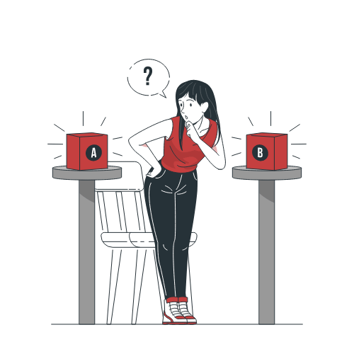
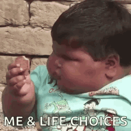

Toma de Decisiones


Por Ps. Geraldine Mercado Gulloso 
¿Qué son las decisiones y cómo influyen en nuestra vida cotidiana?
Muchas veces tomamos una decisión en función de lo fácil que puede llegar a ser defender o justificar nuestra elección, bien sea ante nosotros mismos o ante los demás.
Diariamente estamos tomando decisiones, ya sea desde decidir qué desayunar, si usar el transporte público o ir a pie, si leer un libro o ver una película y hasta qué ropa ponernos, por ende, es importante conocer y tener en cuenta que la toma de decisiones siempre implica elegir entre dos o más opciones.

Todos hemos tomado una decisión importante en el transcurso de nuestras vidas, como por ejemplo; decidir que carrera estudiar, o posiblemente, si estudiar o no. Todas las decisiones que llegamos a tomar, inconscientemente, (En el inconsciente se encuentran los deseos, instintos y recuerdos que el sujeto reprime por resultarle inaceptables, fundamentalmente a causa de sus propias valoraciones morales. Echegoyen, 2017), siempre serán en función a nuestro propio beneficio.
El éxito de cada uno de nosotros en todos los aspectos de la vida y en los roles que cumplimos o en el que nos desempeñamos, bien sea como estudiantes, empleados, jefes, amas de casa, pareja o padres de familia, todo esto gira en torno a nuestras decisiones en el transcurso de nuestras vidas.
Ahora bien, cada paso que damos en la vida implica una elección y cada decisión que tomamos puede que traiga con ella una consecuencia tanto positiva como negativa, por eso lo importante no es solo afrontar nuestra elección sino ser conscientes que las decisiones que tomamos son las que representan nuestro presente y futuro, pues en mayor parte somos el resultado en conjunto de todas las decisiones tomadas anteriormente como el paso a paso de nuestra vida.
Dicho lo anterior, debemos tener en cuenta que las decisiones que tomamos día a día están siendo influenciadas y se ven reflejadas por nuestras emociones y son quienes siempre estarán condicionando nuestra capacidad de elección. Por ejemplo, a la hora de tomar una decisión en un momento de ira o frustración estamos siendo guiados por nuestros impulsos irracionales -Los seres humanos somos seres racionales que continuamente tomamos decisiones irracionales.- (O Brafman, R Brafman. 2009) entonces, así como el caso anterior y de manera sorprendente, tomar una decisión en un momento de inmensa felicidad y alegría tampoco es una muy buena opción, pues nos estaremos guiando por nuestros impulsos de alegría, generando que la calidad del resultado esperado simplemente no sea la mejor.
En conclusión, tomar una decisión siempre implica un riesgo o consecuencia bien sea positiva o negativa, donde la emoción que se siente en el momento es la que puede llegar a ser muy útil a la hora de tomar cualquier decisión.

Entonces, ¡Toma buenas decisiones! sin importar que decidas siempre ten en cuenta las alternativas buscando tu bienestar y el de tu entorno, permitiendo que lo que decidas siempre te lleve a alcanzar el éxito.
Ahora piensa… ¿Qué decisiones no has tomado aún y sabes que debes tomar para conseguir mejores resultados en tu vida?
Referencias
✔ Gradin V., Fernández G., Paz V., & Nicolaisen E. (2021). Toma de decisiones. Manual de Psicología Cognitiva. Recuperado de: https://cognicion.psico.edu.uy/sites/cognicion.psico.edu.uy/files/capitulo_ver6.pdf
✔ Echegoyen, J. (2017). Diccionario de psicología científica y filosófica. Diferencia justamente perceptible, http://www. e-torredebabel. com/Psicologia/Vocabulario/Diferencia-Justamente-Perceptible. htm (consultado el 08 de marzo de 2013).
✔ Brafman, O., & Brafman, R. (2009). El impulso irracional: un libro que cambiará lo que piensas sobre tu forma de pensar. Espasa.